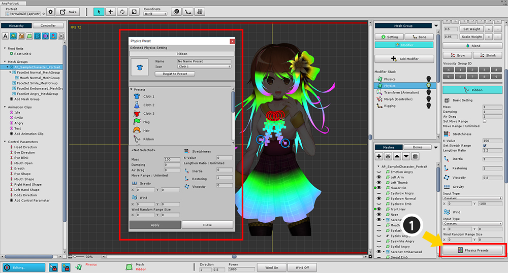
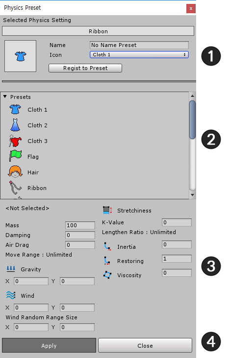

AnyPortrait > マニュアル > 物理モディファイヤプリセット
物理モディファイヤプリセット
1.0.0

「Physics」モディファイアプリセットを使用すると、「物理材質」を簡単に作成し、他のメッシュに材料をコピーすることができます。
(1) 「Physics Presets」ボタンを押すと、「Physics Preset」ダイアログが開きます。
基本的には「物理プリセット」に使用されるいくつかの物理材質があります。
すぐに使用することもあり、自分だけのプリセットを作成することもできます。

1. プリセットの保存
2. プリセットリスト
3. 選択されたプリセットの物理材質属性
4. 物理材質適用/ウィンドウを閉じる
物理プリセット保存

現在の物理材質をプリセットとして保存します。
(1) 「Name」と「Icon」を設定してください。
(2) 「Regist to Preset」ボタンをクリックして保存してください。
物理プリセット適用

(1) 適用するプリセットを選択します。
(2) 「Apply」ボタンを押します。
保存されたプリセットを削除するには、(3) 「Remove Preset」ボタンを押して削除することができます。